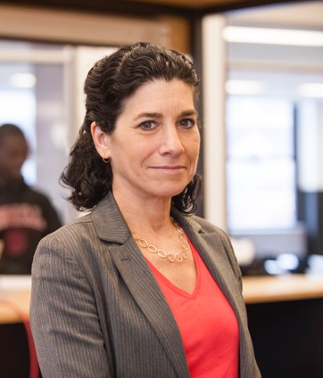

About
 Deborah Estrin is a Professor of Computer Science at Cornell Tech in New York City where she holds The Robert V. Tishman Founder's Chair, serves as the Associate Dean for Impact, and is an Affiliate Faculty at Weill Cornell Medicine. Estrin's research activities include technologies for caregiving, immersive health, small data, participatory sensing, and Public Interest Technology.
Before joining Cornell University Estrin was the Founding Director of the NSF Center for Embedded Networked Sensing (CENS) at UCLA; pioneering the development of mobile and wireless systems to collect and analyze real time data about the physical world. Estrin co-founded the non-profit startup, Open mHealth, and has served on several scientific advisory boards for early stage mobile health startups and as an Amazon Scholar.
Estrin's honors include: ACM Athena Lecture (2006), Anita Borg Institute's Women of Vision Award for Innovation (2007), the IEEE Internet Award (2017), MacArthur Fellowship (2018), and the IEEE John von Neumann Medal (2022). She is an elected member of the American Academy of Arts and Sciences (2007), the National Academy of Engineering (2009), and the National Academy of Medicine (2019). She was awarded honorary doctorates from EPFL (2008) and Uppsala (2011).
Current funders include National Science Foundation (Award #1700832 and #2026577), New York Presbyterian, Optum Labs, Cornell University, Center for Research and Education on Aging and Technology Enhancement (CREATE V), MacArthur Foundation, Siegel Family Endowment, Atlantic Philanthropies.
Current collaborators include Ashley Beecy, Michael Byrne, Tanzeem Choudhury, Abe Davis, Nicki Dell, Harald Haraldsson, Wendy Ju, JP Pollak, Malgorzata Rejniak, Lyel Resner, Madeline Sterling.
email: destrin@cornell.edu, twitter: @deborahestrin, Longform CV.
Faisal Alquaddoomi, Lee Breslau, Nirupama Bulusu, Alberto Cerpa, Andrea Cuadra, Ron Cocchi, Jeremy Elson, Hossein Falaki, Deepak Ganesan, Lewis Girod, Benjamin Greenstein, Ahmed Helmy, Shai Herzog, Andy Hsieh, Bau-Yi Polly Huang, Josh Hyman, Chalermek Intanagonwiwat, Donnie Kim, Teresa Ko, Kanna Satish Kumar, Charley Ching-Gung Liu, Brent Longstaff, Martin Lukac, Danny Mitzel, Minyoung (Min) Mun, Fabian Okeke, Andrew Parker, Graham Phillips, Pavlin Radoslavov, Nithya Ramanathan, Anoop Reddy, Sasank Reddy, Reza Rejaie, Vids Samanta, Thomas Schoellhammer, Puneet Sharma, Thanos Stathopoulos, Gene Tsudik, Kannan Varadhan, Hanbiao Wang, Liming Wei, Hongyi Wen, Ya Xu, Longqi Yang, Haobo Yu, Yan Yu, Daniel Zappala, Jerry Zhao.